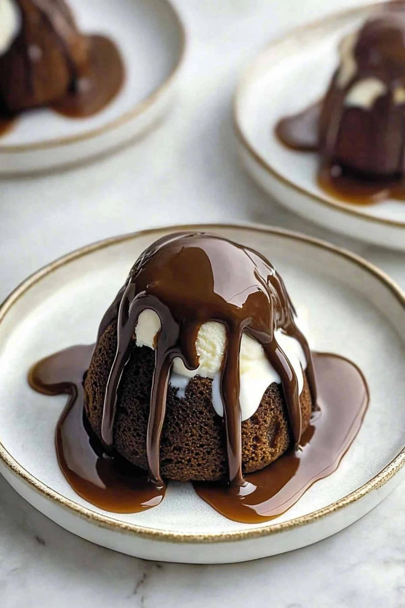

Home
Chili's Molten Lava Cake

Description:
Indulge in gooey decadence with this copycat Chili’s molten lava cake recipe! Rich chocolate
cake hides a luscious molten center, perfect for satisfying dessert cravings.
Ingredients:
- Milk Chocolate Chips
- Unsalted Butter
- Powdered Sugar
- Salt
- Eggs
- Vanilla Extract
- All-Purpose Flour
- Caramel Sauce
- Vanilla Ice Cream
- Chocolate Magic Shell Topping
Steps:
- Preheat. Set the oven to 400°Fahrenheit and coat the ramekins with cooking spray.
- Melt. Microwave the chocolate chips in intervals until smooth, stirring frequently.
- Mix. Whisk the powdered sugar, salt, eggs, yolk, and vanilla into the chocolate
mixture until creamy.
- Fold. Fold in the flour gently until no streaks are visible. Divide the batter into ramekins.
- Bake. Bake for 13-15 minutes until the edges are set and the centers are soft. Then,
cool them briefly.
- Prep the plates. Drizzle caramel sauce on serving plates for decoration.
- Release. Loosen the cake edges with a knife. Invert the cake onto plates, tapping to
help them release.
- Serve. Top the cakes with ice cream and chocolate magic shell. Serve immediately.